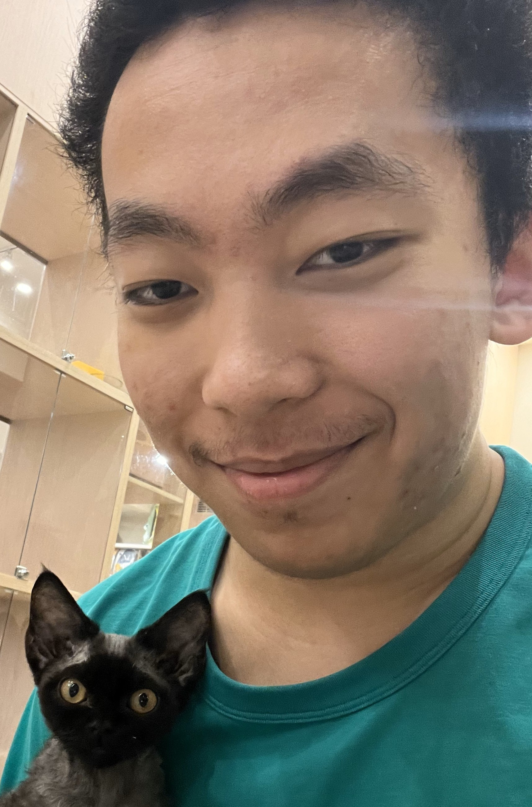
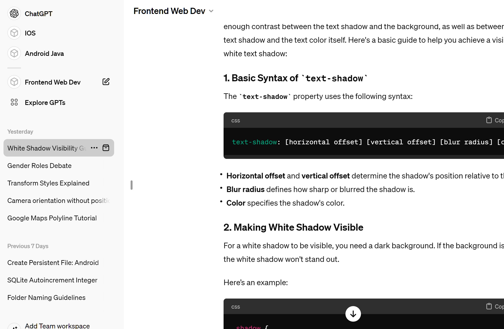
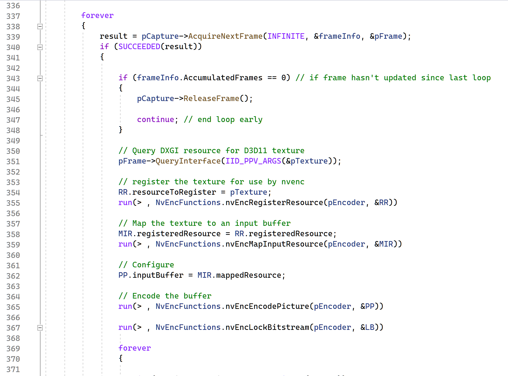
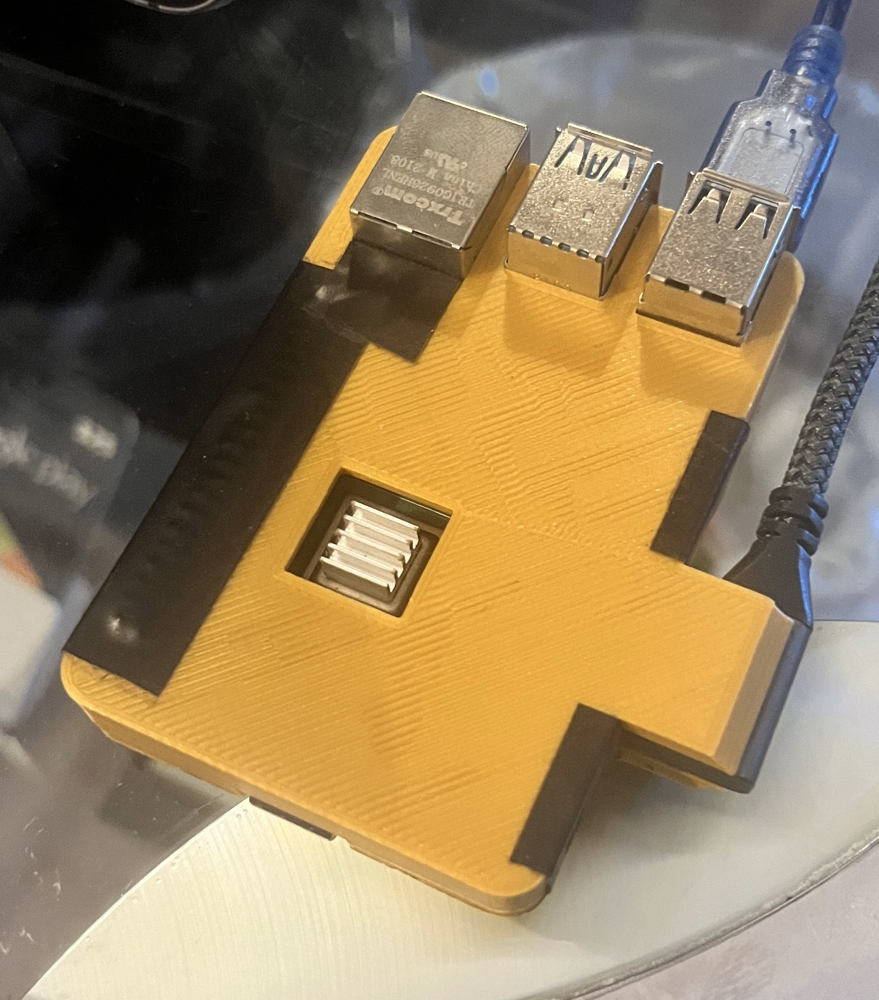
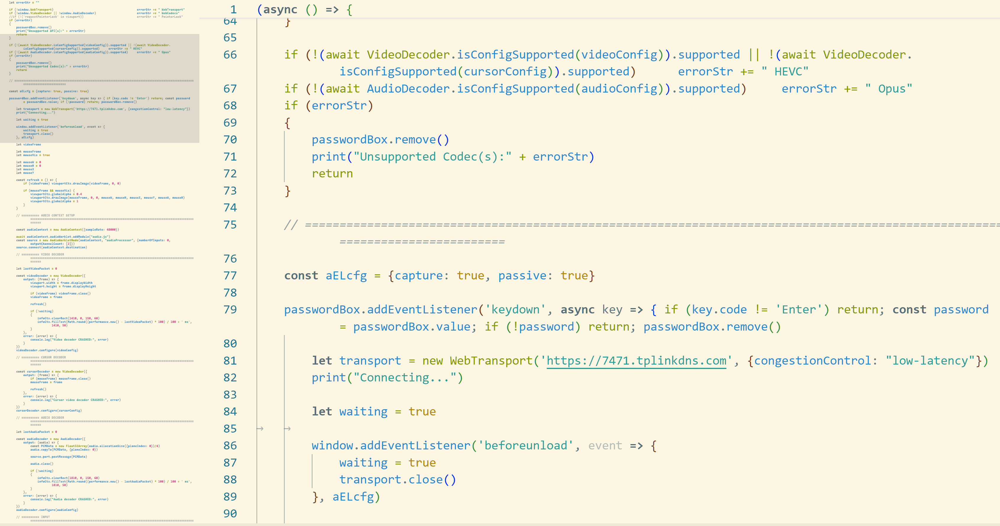
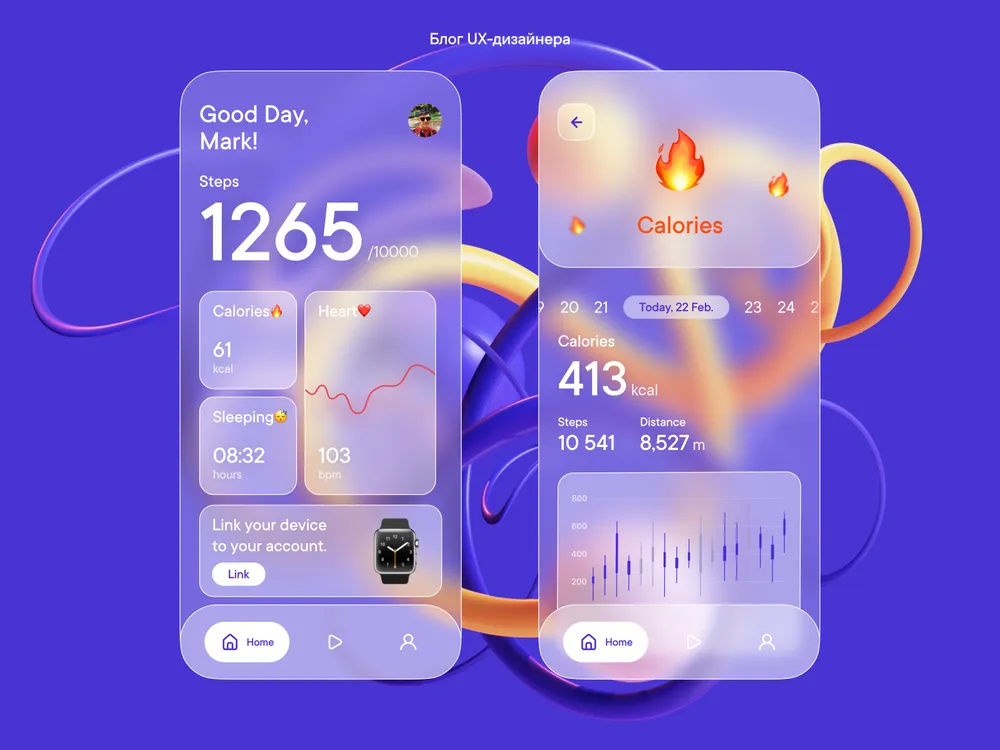
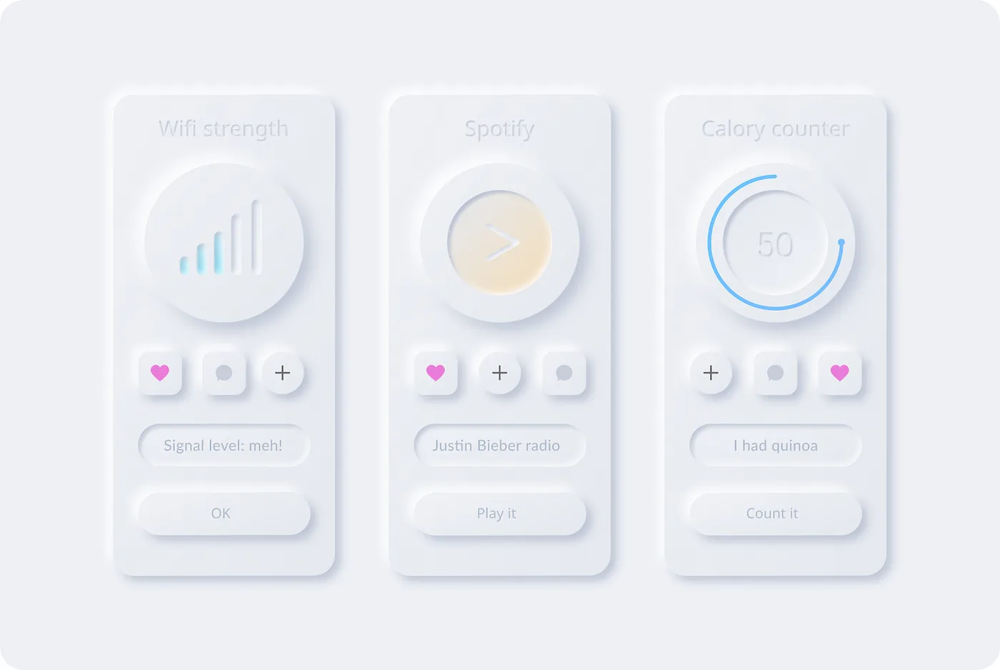
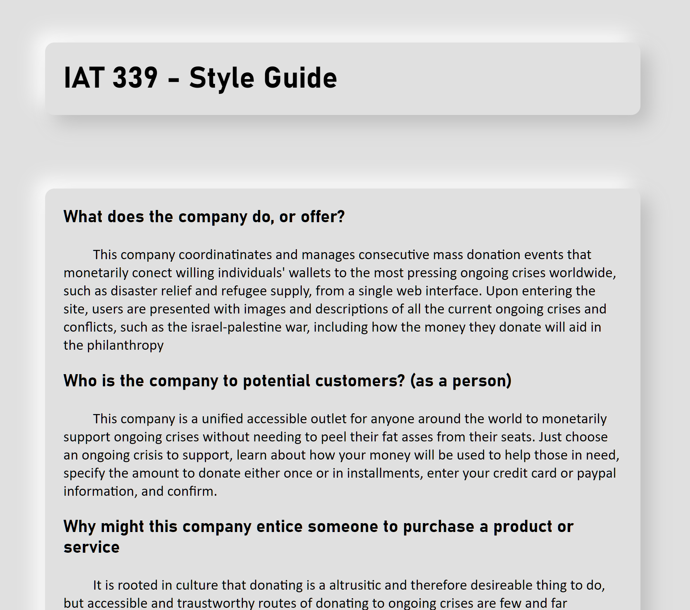
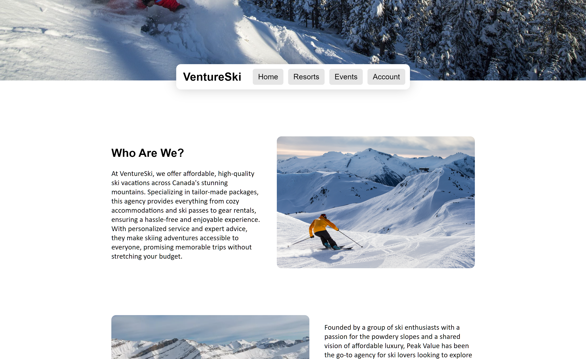

Welcome!
Scroll Down :>
Who am I?
Hello! My name is Tiger Yang, and ever since becoming interested in frontend web development, I've always been into pushing the boundaries of what's possible with the medium and creating online experiences that others won't soon forget.
Browser compatibility often finds itself at the bottom of my priorities, as I employ the most experimental and cutting-edge APIs to make my dreams into reality.
I also highly prioritize optimization. The stereotype of websites being fundamentally slower than native apps is something I wish to fight, and because of that, I tend to never use third-party libraries and frameworks, as in my mind, "nothing" will always be faster than "anything".
A picture I took at a cat cafe
My Interests in Employment
In an employment setting, I feel the most comfortable designing for modern websites that employ avant-garde design patterns and styles.
I wish to be provided the freedom to experiment with cutting-edge web technologies and APIs, as well as poke at established web design rules and standards.
I also wish for an employer who views their employees as equals instead of subordinates, and who is open to feedback and suggestions from me as well as others.
However, I will absolutely concede to frameworks and compatibility guidelines if the particular project demands it.
Project Process Analysis One
Shortly after graduation from high school, I had what I considered to be a brilliant idea. Instead of splurging on a hign-perfrmance laptop that was thick, heavy, power hungry, hot, and unupgradable, I could use remote access software to control my home computer from my existing laptop, redirecting the money I saved to upgrade my home computer to be more powerful than any laptop could achieve. However, all existing remote access software had pain points of various kinds, such as unreliable connections, agressive bandwitch hogging, unacceptably high latency, and audio video syncronization problems,. This led me to attempt to write my own remote access software from scratch, with guidance from ChatGPT
Screenshot of my ChatGPT dashboard: https://chat.openai.com/
I wanted my app to be as low-level and optomized as possible, so I decided to write it in c++ so that I can interface direcly with Window's Desktop Duplication API and Nvidia's Video Codec SDK to capture the display frames within GPU memory, and encode it to HEVC with ultra low latecny using the GPU's dedicated video engine.
Screenshot of a section of the code that handles video
For audio, I interfaced directly with Window's Audio Session API and LibOpus to capture the speaker output and encode it using the OPUS codec.

Screenshot of a section of the code that handles audio
for mouse and keyboard emulation, I originally wanted to use window's acessibility APIs, but I quickly realized that nothing offered by windows would work in the secure desktop, such as a UAC prompt, so I pivoted to using a Raspberry Pi attached to the computer, which via it's usb port's OTG functionality, allows it to masquerade as a keyboard and mouse, completely fooling windows.
Photo of the Raspberry Pi I used to control the computer
I decided to implement the client as a website using Javascript and it's WebTransport, WebCodecs, Canvas, and Web Audio APIs to communicate with the server using QUIC, decode the arriving video and audio bitstreams using the client device's hardware or software decoders, and display the decoded video and audio frames to the user.
Screenshot of a section of the client JavaScript code
In the end, while I got further than I could have ever expected, the app still wasn't quite at the level that I had hoped. Emulating mouse and keyboard input via an external OTG device isn't a particularly latency-friendly way of doing it, and the display feed still cuts off when on the secure desktop. However, it was more than functional enough when I stopped development, and I proceeded to extensively use this app I created for the next few semesters of university.
Despite what one might expect, I came out of this with an even stronger drive to write my own software to achieve maximum performance.
Project Process Analysis Two
Throughout IAT 339 Web Design and Development, I was tasked with crafting a unique design ethos, using it to create a style guide, and using that to build a full-on website. While admittedly involved, I assumed this process would be pretty linear and straightforward, but I was wrong.
Given that I wanted to create something unique, I explored avante-garde website designs and patterns online until my eyes were caught on Glassmorphism. I am a sucker for background blur and the calm intimacy it brings, as well as frosted textured glass, so I thought Glassmorphism would be an excellent design language to adopt for my website.
Glassmorphism example: https://medium.com/
Unfortunately, I soon realized that backgrounds are REQUIRED for Glassmorphism to work, or else there's nothing for the glass to refract. I tried many different things but ultimately couldn't add a good background that didn't the site look awful.
So I went searching for styles again and decided to switch from Glassmorphism to a different design language called Neumorphism, which involves light and dark shadows to convey filleted slabs of concrete. This design language stipulates a fully flat and detail-less background to emphasize the shadows and contours.
Neumorphism example: https://uxdesign.cc/
However, with the design language solved, various other issues began to reveal themselves one after another. These issues included the Neumorphic shadow details taking up too much screenspace, the black and white shadows preventing the background from being full black or white, problems of affordance and functionality conveyance for interactive elements, etc. Overall, the site just didn't feel "real" or "authentic", and instead looked like a university web design project.
University-web-design-project looking website that I had so far
So with a heavy heart, I made the decision to renounce the unique design ethos I had been building up since the beginning of the project and start over from scratch with a less lofty design goal. I still wanted the site to be totally modern and minimalist, and after extensive hunting, I came across a site template that was simply perfect.

Totally modern and minimalist website template: https://elements.envato.com/
After familiarizing myself with the design language of this template, namely the expansive title background, the floating navigation bar, and the rounded image elements, I redesigned the site, employing this language till I was finally happy with what I got.
Redesigned site employing the totally modern and minimalistic site template I found
While this project was successful in the end, it taught me an important lesson regarding new-fangled design patterns and languages. While experimentation is the key to innovation in any subject, there is a reason these avante-garde design languages are barely used in the industry.
Ways to Contact me